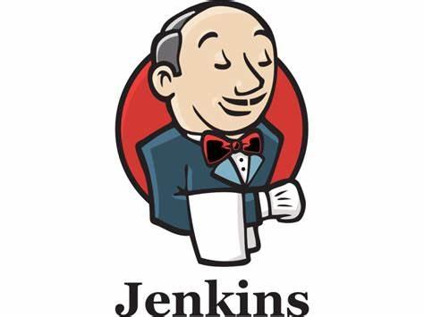

This project mainly focuses on the deployment of One of the World's most popular game, Super Mario, on Amazon Elastic Kubernetes Service with Terraform and Continuous Integration and Continuous Development (CI/CD).

Deploying an Online Boutigque Web Application with Kubernetes. In this project, I leveraged on microservices architecture to deploy an 11-tier microservices architecture and is designed as a web-based e-commerce application.
Terraform is utilised to provision cloud resources. It is an open-source Infrastructure as Code (IaC) tool that enables the definition and deployment of infrastructure through a declarative configuration language.
Click the image to interact with the dashboard in the image, else, view the projects by clicking the button below.

Our goal in this project is to utilize the advanced automation and strong capabilities of Jenkins to streamline the integration process in the software development workflow, resulting in significant cost reduction and early defect detection.
Click the image to view this project, else, view another project on Jenkins CI by clicking the button below.
This is an end-to-end project which places emphasis on how to utilise Docker to run applications in containers, developing docker container and automationg these processes with Continuous integration and Continuous deploymnet with Github Actions.
{kind=link}